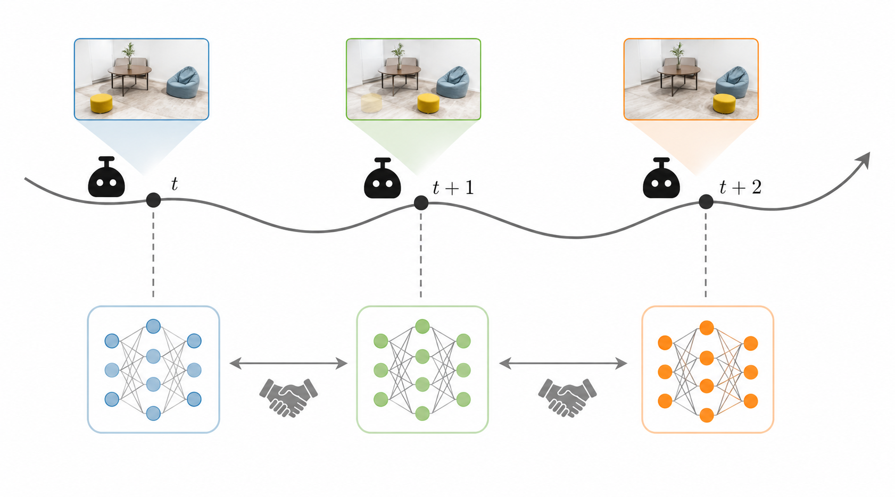
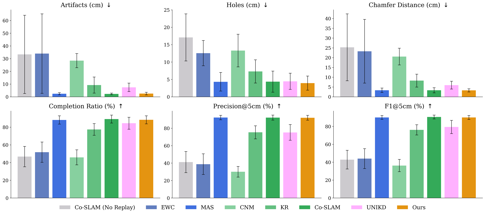
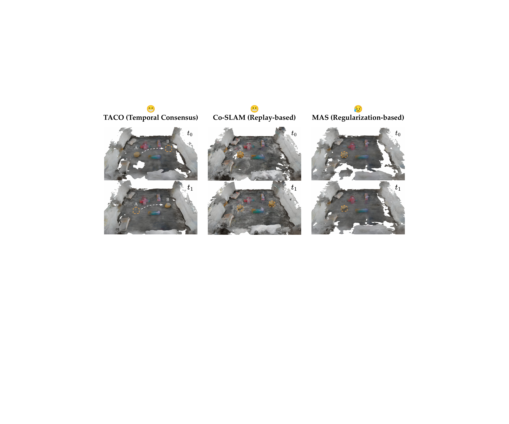

The official implementation supports Replica and ScanNet configurations. See the GitHub repository for installation, dataset preparation, training, visualization, and evaluation instructions.
python main.py --config configs/Replica/office1.yamlContinual neural mapping must update a scene representation from sequential RGB-D observations without catastrophically overwriting geometry learned earlier. Replay-based approaches reduce forgetting by storing historical observations, but this increases memory usage and can be undesirable in long-horizon robot deployments. TACO addresses this setting with temporal consensus optimization: historical neural map snapshots are treated as temporal neighbors, and the current map is optimized against them using parameter-wise importance weights. The resulting objective preserves parameters that strongly influence previously observed geometry while leaving uncertain or newly changed regions free to adapt.

TACO turns historical map states into temporal neighbors, preserving stable scene knowledge while allowing changed regions to update over time.

Across artifacts, holes, Chamfer distance, completion ratio, precision, and F1, TACO balances plasticity and stability without storing past RGB-D frames.

TACO supports continual updates in dynamic real-world settings by protecting reliable map parameters and adapting uncertain regions as new observations arrive.
TACO periodically stores compact snapshots of the neural implicit map instead of retaining old RGB-D frames.
Parameter importance is estimated from output sensitivity, identifying which parts of the map should be protected.
The current map is optimized with a masked, importance-weighted temporal consensus term over past snapshots.
The official implementation supports Replica and ScanNet configurations. See the GitHub repository for installation, dataset preparation, training, visualization, and evaluation instructions.
python main.py --config configs/Replica/office1.yaml@inproceedings{Zhou2026RSS,
title={TACO: Temporal Consensus Optimization for Continual Neural Mapping},
author={Zhou, Xunlan and Zhao, Hongrui and Mehr, Negar},
booktitle={Robotics: Science and Systems (RSS)},
year={2026}
}